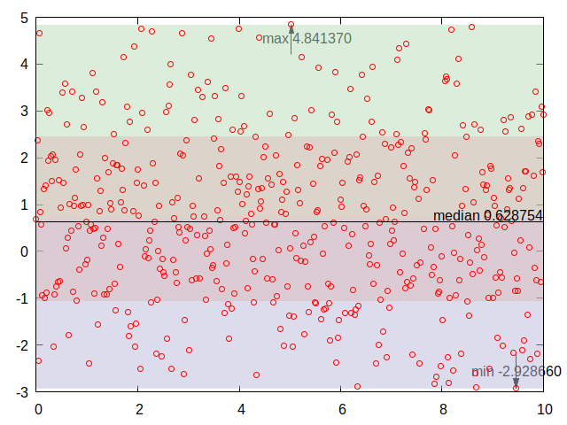

Gnuplot und Statistik

Ich bin neulich bei Mastodon über eine Anfrage gestolpert, wie man online schnell eine graphische Darstellung statistischer Daten mit Mittelwert usw. anfertigen könnte. Ich gab dazu einige Suchparameter ergänzt um den Schlüsselbegriff "Gnuplot" ein und fand sofort einen Artikel, der erklärte, wie man das angefragte Szenario mittels Gnuplot umsetzen könnte.
Nachdem ich also die Frage mit Verweis auf den entsprechenden Artikel auf Mastodon beantwortet hatte, probierte ich die vorgeschlagene Lösung am nächsten Tag aus. Es stellte sich (wieder einmal) heraus, dass im Internet die Wahrheit nicht gerade zu Hause ist: Die vorgeschlagene Lösung funktionierte nicht.
Eine Lösung fand ich durch hartnäckiges Rumprobieren und Kombinieren der unten verlinkten Artikel selbst - angehängt findet man das entsprechende Gnuplot-Skript und das Ergebnis davon:

Gnuplot Statistikreset
set terminal x11 enhanced font "terminal-14"
set term pngcairo font "Arial,12"
set output "/tmp/plot.png"
# This first part up to 'set yrange [0:2]' is just to generate some data
set sample 500
set table 'stats1.dat'
plot [0:10] 0.5+invnorm(rand(0))*2
unset table
unset key
set style fill transparent solid 0.5 noborder
set yrange [-3:5]
set style fill transparent solid 0.5 noborder
set style textbox opaque noborder fillcolor rgb "#30FFFFFF"
stats 'stats1.dat' u 1:2
show variables all
set arrow 1 from STATS_pos_min_y, graph 0.1 to STATS_pos_min_y, STATS_min_y fill
set arrow 2 from STATS_pos_max_y, graph 0.9 to STATS_pos_max_y, STATS_max_y fill
set label 1 at STATS_pos_min_y, graph 0.1 sprintf("min %f",STATS_min_y) center offset 0,-1 front boxed
set label 2 at STATS_pos_max_y, graph 0.9 sprintf("max %f",STATS_max_y) center offset 2,1 front boxed
set arrow 3 from graph 0, first STATS_median_y to graph 1, first STATS_median_y nohead front
set label 3 at graph 1, first STATS_median_y sprintf("median %f",STATS_median_y) right offset 0,0.4 front boxed
set arrow 4 from graph 0, first STATS_mean_y to graph 1, first STATS_mean_y nohead dt "." lw 2 front
set label 4 at graph 0, first STATS_mean_y sprintf("mean %f",STATS_mean_y) left offset 0.8,0.4 front boxed
#set label 5 at graph 0, first STATS_mean_y+STATS_stddev_y sprintf("{/Symbol s} %.2f",STATS_stddev_y) left offset 0.8,0.4 front boxed
plot STATS_min_y with filledcurves y1=STATS_mean_y lt 1 lc rgb "#bbbbdd", \
STATS_max_y with filledcurves y1=STATS_mean_y lt 1 lc rgb "#bbddbb", \
STATS_mean_y+STATS_stddev_y with filledcurves y1=STATS_mean_y-STATS_stddev_y lt 1 lc rgb "#ddbbbb", \
'stats1.dat' u 1:2 w p pt 6 lc rgb "#ff0000"
Links
gnuplot - adding median to plot with errorbars AND logscale'd x-axis
Placing label over mapped 3D graph in Gnuplot
Basic statistics with gnuplot
Statistical patch to gnuplot
gnuplot demo script: stats.dem
Artikel, die hierher verlinken
GPS-(NMEA-)Tracks mit Gnuplot zu Animationen verarbeiten
02.11.2021
Durch einen Post auf Mastodon wurde ich auf eine Idee gebracht...


Vor 5 Jahren hier im Blog
-
XPath-Lab-Komponente
10.12.2017
Ich habe als Fingerübung eine Komponente erstellt, mit der man XPath-Ausdrücke am lebenden Objekt studieren kann...
Weiterlesen...
Tags
Android Basteln C und C++ Chaos Datenbanken Docker dWb+ ESP Wifi Garten Geo Git(lab|hub) Go GUI Gui Hardware Java Jupyter Komponenten Komponenten Git(lab|hub) Links Linux Markdown Markup Music Numerik PKI-X.509-CA Python QBrowser Rants Raspi Revisited Security Software-Test sQLshell TeleGrafana Verschiedenes Video Virtualisierung Windows Upcoming...
Neueste Artikel
- Expect-Dialog-CA Version 2.3.0
CA-Management-Lösung in Version 2.3.0 fertiggestellt und auf Github verfügbar
Weiterlesen... - Attribute und Custom Extensions in X.509v3 Zertifikaten
Wie bereits im letzten Artikel zu diesem Thema angedeutet kann man in X.509 Zertifikate der Version 3 beliebige Daten einbetten.
Weiterlesen... - Datentypen für Custom Extensions von X509-Zertifikaten
Ich habe in letzter Zeit über die Möglichkeiten der Ergänzung von Zertifikaten durch das Hinzufügen beliebiger Informationen nachgedacht und dazu diverse Tests mit OpenSSL vollzogen um genau herauszufinden, wie man die verschiedenen Datentypen über openssl.conf definieren und hinzufügen kann.
Weiterlesen...
Manche nennen es Blog, manche Web-Seite - ich schreibe hier hin und wieder über meine Erlebnisse, Rückschläge und Erleuchtungen bei meinen Hobbies.
Wer daran teilhaben und eventuell sogar davon profitieren möchte, muß damit leben, daß ich hin und wieder kleine Ausflüge in Bereiche mache, die nichts mit IT, Administration oder Softwareentwicklung zu tun haben.
Ich wünsche allen Lesern viel Spaß und hin und wieder einen kleinen AHA!-Effekt...
PS: Meine öffentlichen GitHub-Repositories findet man hier.